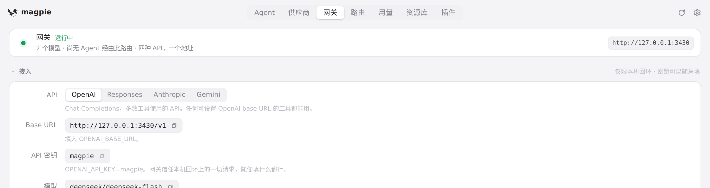
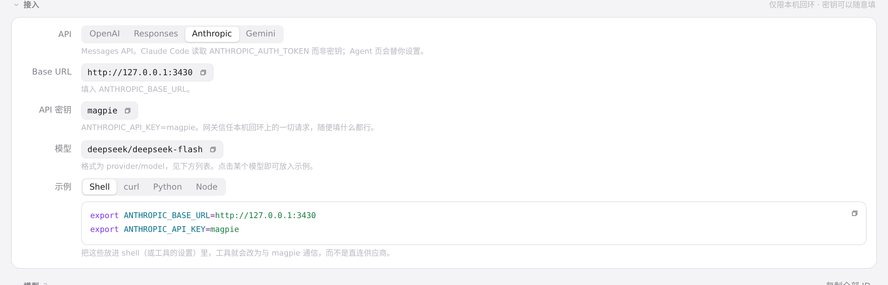

#373 界面预览
commit 03aca06 · 回到 PR · 新增 MAGPIE_PUBLIC_URL：设置页「关于」里的「网关地址」、网关页顶部的地址与「接入」一节（Base URL、密钥、示例代码）改为显示对外公布的地址；网关页的密钥与示例在开启局域网共享且地址不是回环地址时改用局域网密钥，而不是固定的 magpie。
红线是鼠标走过的轨迹，红色圆环是一次点击；底部文字是这一步在做什么。空格暂停，← → 逐段查看。
设置页显示的网关地址 · 设置页「关于」里的「网关地址」一行与复制按钮

网关页的地址与接入信息 · 网关页顶部卡片上的网关地址
 网关页的地址与接入信息 · 「接入」一节：Base URL、API 密钥、示例代码（OpenAI）
网关页的地址与接入信息 · 「接入」一节：Base URL、API 密钥、示例代码（OpenAI）

网关页的地址与接入信息 · 切到 Anthropic 后的「接入」一节